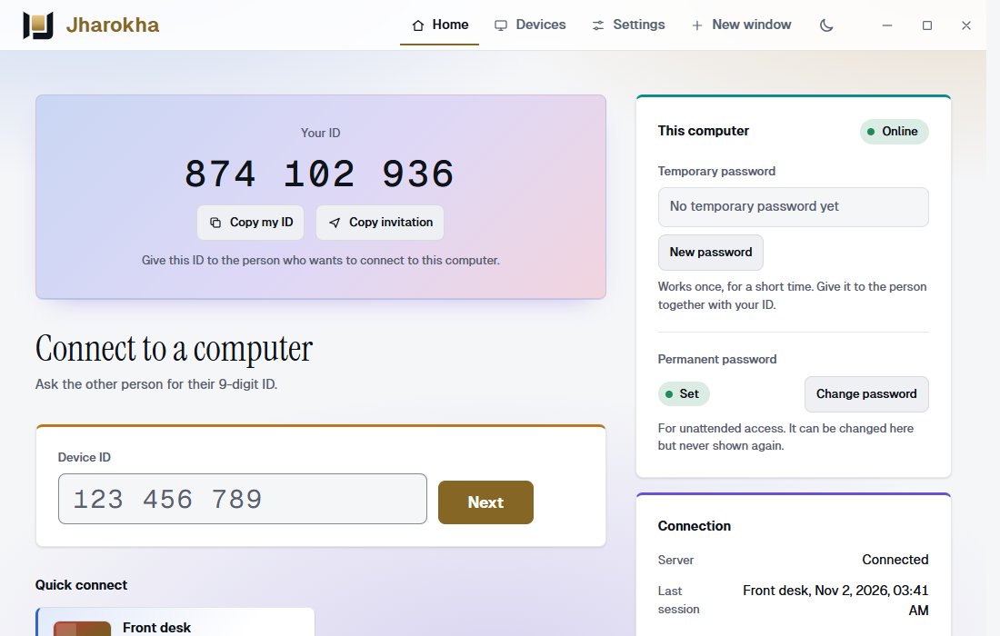
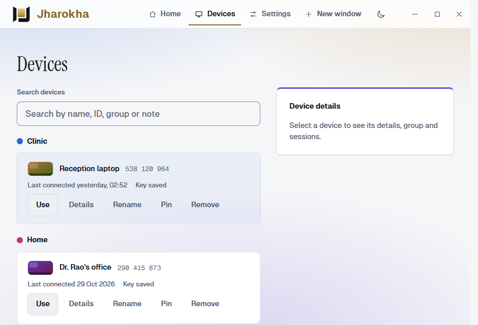
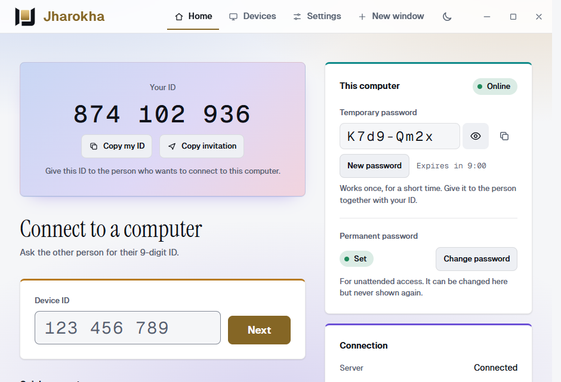

Jharokha
See and, when the owner agrees, control another computer. Every connection is approved by the person sitting at that computer, and they can stop it with one click.
Windows 10 and 11, 64-bit. Pilot build.

Simple to use, careful by default
Give someone your nine-digit ID, or type theirs. The owner answers the rest.
Connect with a number
Every computer has a nine-digit ID. No account, address or port to set up.
Look first, control if allowed
Viewers start by looking. The owner switches mouse and keyboard control on, and off again, at any moment.
Two kinds of password
A temporary one that works once, for helping a friend. A permanent one you set, for your own computers.
Asks first
A window on the computer being reached shows who is asking and waits for Allow or Decline. Everything starts ticked; untick what you do not want to share.
An activity log on the computer
Connections are recorded on the computer being reached. If the log cannot be written, sharing stays off.
Updates that are checked
Updates are signed and checked before installing, and the old version comes back if the new one does not start.
Three steps, and the owner is in charge
Install and share your ID
Install Jharokha on the computer you want to reach. It shows an ID like 874 102 936 and makes a temporary password.
Connect from another computer
On the other computer, type the ID and the password, then press Next. The owner sees who is asking.
The owner decides
They press Allow or Decline. A bar on their screen lets them pause control or end the session at any time.


The pictures are the real Jharokha window with made-up data (the IDs and names are examples).
What the design promises
Remote access is only worth having if you can trust who is on the other end.
Passwords stay off the server
Passwords are never sent to the Jharokha server. The two computers prove to each other that they know it.
The server cannot see your screen
The screen travels between the two computers, encrypted. A relay, when one is needed, cannot read it.
No hints for guessers
An ID that does not exist, is switched off or is busy gets the same answer, so guessing IDs reveals nothing.
Stopping is always one click away
The viewed computer shows who is connected and lets its owner end the session or pause control.
Jharokha is a pilot product. It has not been through an independent security audit.
For one person, or for an organisation
| Individual | Corporate | |
|---|---|---|
| Best for | One person or a small team | An organisation that runs its own Jharokha server |
| Server | Jharokha's own. Nothing to enter. | Yours: you enter its address during setup. |
| Where saved screen previews go | Kept on your computer, encrypted for your Windows account, for 30 days | Not kept |
Get Jharokha Remote
One installer sets up both parts: the host, so others can reach this computer, and the viewer, so you can reach theirs.
Windows installer
Windows 10 or 11, 64-bit. Needs the Microsoft Edge WebView2 Runtime, which is already part of Windows 11 and current Windows 10.
Please read before you install
- Windows will say "unknown publisher". These builds are signed with our own certificate, not one Windows already trusts, because a public code-signing certificate has not been bought yet. Continue only if the file's SHA-256 matches the one on the download page.
- Pilot use. The licence text in the installer is a draft that no lawyer has reviewed.
- Only Windows for now. macOS, Linux and phones are planned, not built.
Good to know
Can someone connect without my approval?
No: a window on your computer asks you first and waits for your answer. A permanent password is for your own computers; anyone who knows it can try to connect, so choose a long one and keep it private.
Do I need an account?
No. You install the program and you have an ID.
How do I stop someone who is connected?
Use the bar on your screen to end the session or pause their control. Closing the program also ends it.
How do updates work?
Settings has a Check for updates button, and the program also checks by itself. A new version is downloaded from this project's download page, its signature and checksum are verified, and it is installed when nobody is connected (or at once if you press Install now). If the new version does not start, the old one is put back.
Windows asked me to restart when I installed an update by double-clicking the installer. What now?
That happens when the installer is run without administrator rights while the program is running. Updating from inside the app avoids it. If you do install by hand, run the installer as administrator, or stop the Jharokha service first.
How do I say the name?
juh-ROH-kuh, with the stress on the middle part. A jharokha is the carved stone window that projects from the wall of an Indian palace: you can see out, and the street can see you appear.